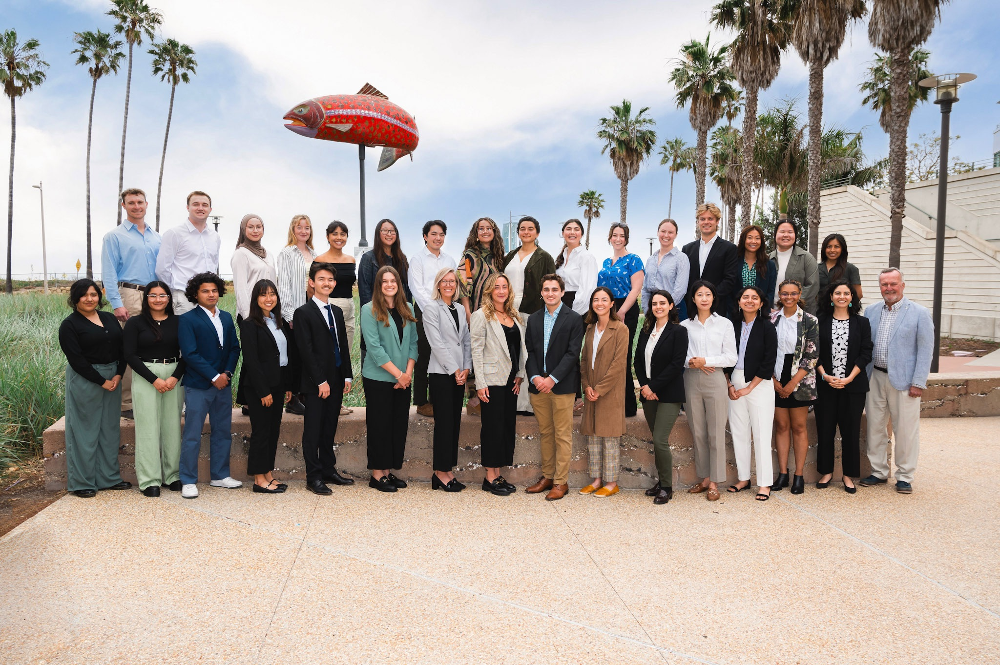
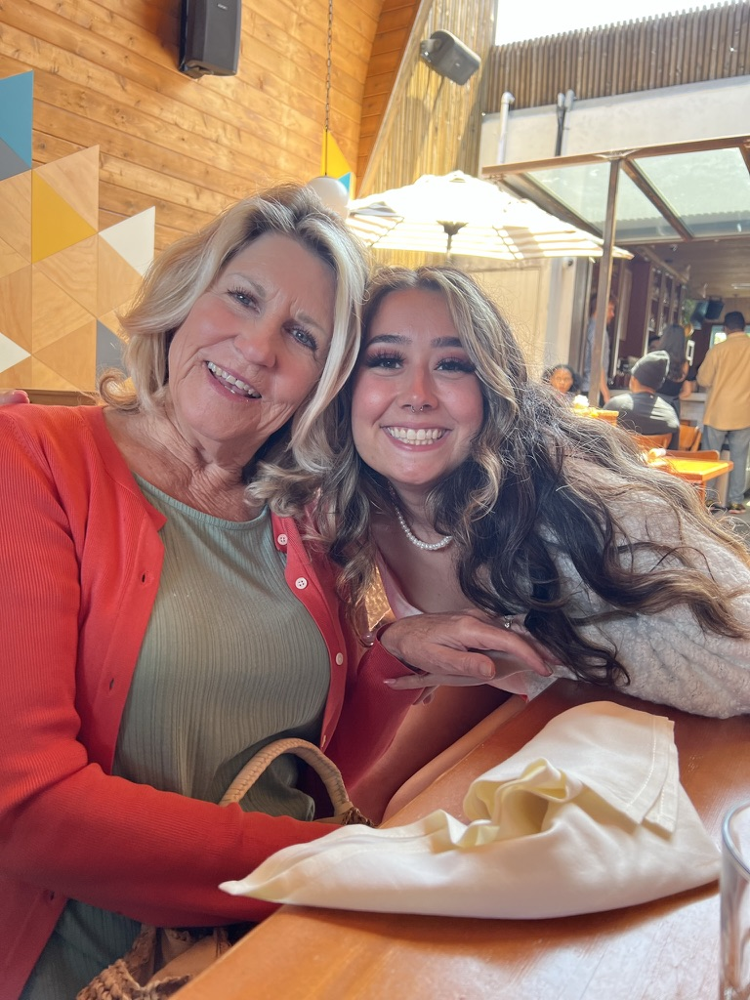
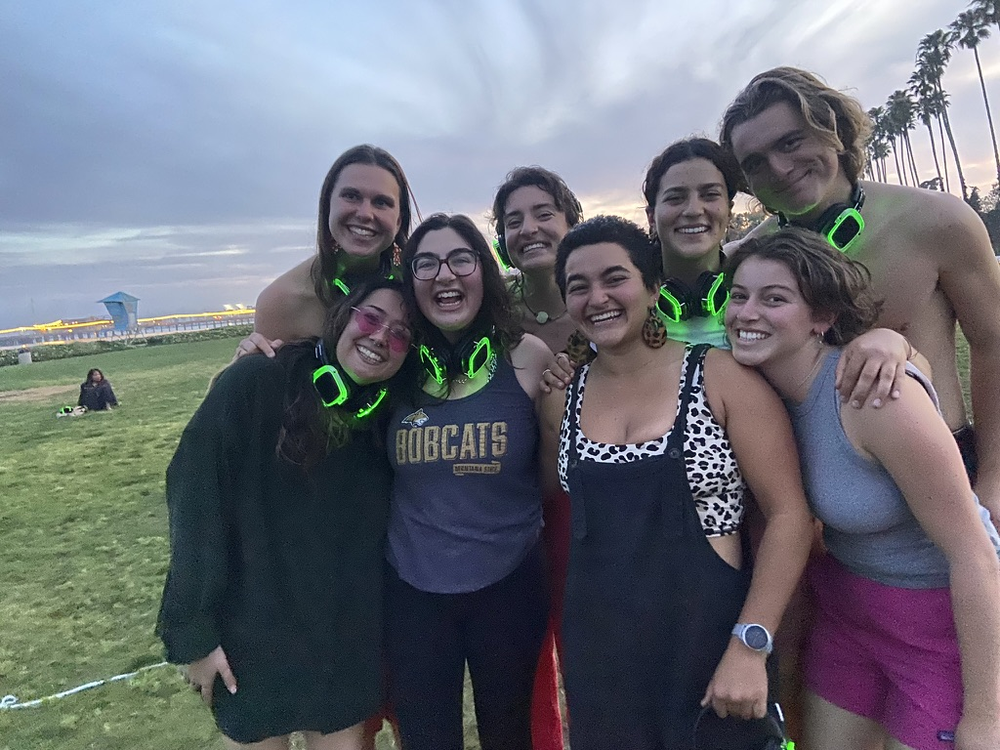

Professionally
I am seeking a full-time position at a forward-thinking organization where I can make meaningful contributions and further develop my skills as a data professional. I carry a hefty toolbox of analytical techniques applicable to a broad scope of tasks. I received my Master of Environmental Data Science (MEDS) degree at the Bren School of Environmental Science & Management (June 2024). I am also an ACS certified chemist, I obtained my degree in Chemistry from the University of California, San Diego (June 2023). I am passionate about continuous learning and growth. Eager to explore new technologies and methodologies to stay ahead of the curve in this rapidly evolving field.
As a Data Scientist – Graduate Research Assistant at The 2035 Initiative, I’ve had the opportunity to work on a variety of projects geared towards the sustainable transition to decarbonization. The majority of my projects are people-focused. I aid in gathering the public’s perspective on climate related policies and leverage collected data to help drive informed action. In my role, I employ various geospatial techniques to develop workflows for surveying projects. I analyze and interpret Qualtrics data by generating statistical reports, as well as maps, and graphs using R and Python. I’ve debugged workflows and provided descriptive feedback on developmental changes for data mining projects. I foster collaboration among interdisciplinary teams to create unique solutions and deliverables.
MEDS Class of 2024 the day of our Capstone Public Presentation! Date: May 2024.
I aspire to work with an organization that shares my dedication to environmental stewardship and social equity. My goal is to amplify the voices of vulnerable communities, ensuring they are heard and considered when writing climate change policies and making actionable decisions. By adopting a grassroots approach, I believe we can create a more just and sustainable world for future generations. Together, we can turn our collective vision into reality, forging a path toward a brighter, more equitable future for all.
Behind the Screen
In case you were curious about my name pronunciation, (“Sof-aya” like papaya), it’s actually a piece of my family’s history. See, my mom’s ancestors immigrated from Trondheim, Norway and carried a tradition of namesakes. Unlike the typical Jr., Sr., The III, our family skips every other generation. For example, I’m named after my beloved grandmother, Sofia Anne. This tradition’s been in our family for eight generations! Growing up, I didn’t always love having a unique pronunciation, but it’s given me the confidence to speak up and politely correct someone. I love my name, the strength it gives me, and my lineage tied to it.

This is my lovely grandmother, whom I was named after, Sofia Anne. In this photo, we were out enjoying brunch at this tasty place called Madison on Park in San Diego. Date: June 2023.
Now a little bit about me! My favorite way to spend my free time is dancing, trying out new recipes, yoga, and organizing get-togethers. I thoroughly enjoy every aspect of planning a gathering. From visualizing the event, creating task lists, and sending out invitations, to coordinating all the necessary elements to create meaningful memories. It brings me delight seeing it all come together in full fruition.

Our zumba crew takes on ecstatic dance in Santa Barbara! Date: April 2024.
![A group of three are sitting on a tapestry on the beach. There is art supplies and charcuterie board filled with cookies, crackers, cheeses, and treats on the tapestry. Bags of chips and other art supplies like paper, colored penciles, cups are on the tapestry. A young woman in a black hoodie wearing a blanket is sitting on the tapestry in the center and taking a photo of the young man on the right. The young man on the right's fingers and legs are in the picture and is drawing on a paper ontop of a folded chess board. Another young man is leaning on a pillow and using an amazon box to draw on a piece of paper. There are four young men playing spike ball on the beach in the background.](images/about/beach_picnic.jpeg)
Beach day meets craft time with the council (aka our nickname for our friend group lol) in Malibu. Date: July 2022.
As of recently, I’m in a post graduation limbo and only working part-time. Therefore, I am seizing the opportunity to explore emerging sustainable energy technologies and brain storming a pipeline to a solar-punk future.